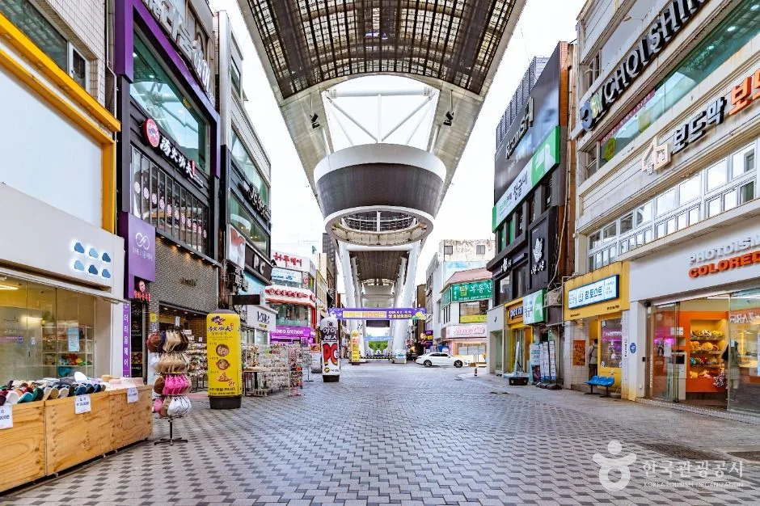
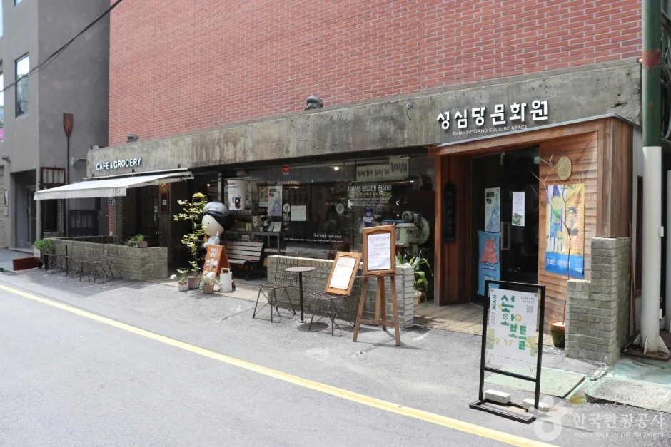
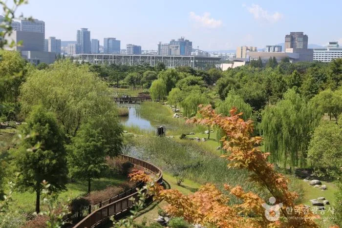
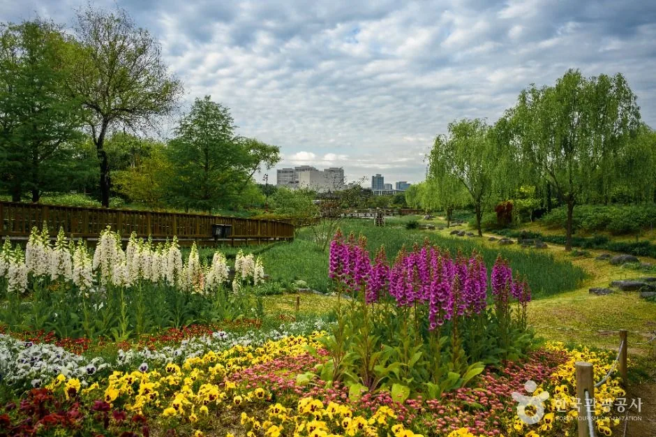
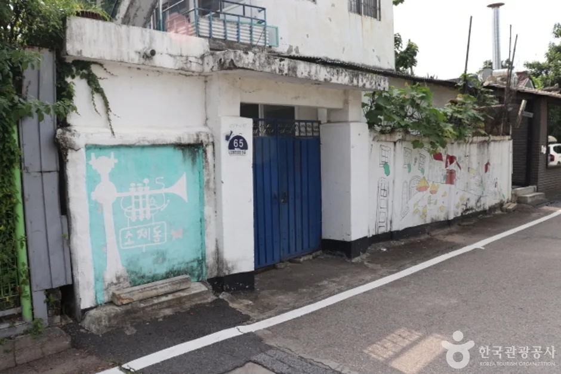
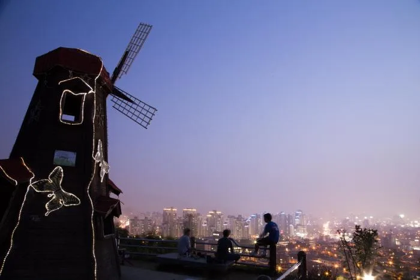
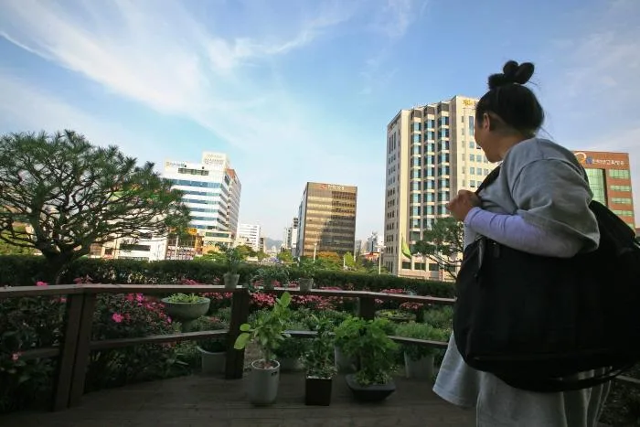

▲ 성심당 튀김소보로. 1956년 대전역 앞 찐빵집에서 시작한 향토 제과점의 대표 제품이다
대전은 지나가는 도시입니다. 경부고속도로와 호남고속도로가 갈라지는 위치에 있어, 수도권에서 영남으로 가든 호남으로 가든 대전 부근을 지납니다.
그런데 대부분 그냥 지나갑니다. 도심으로 들어가면 주차가 번거롭기 때문입니다. 특히 성심당이 있는 은행동 일대는 대전에서 가장 오래된 도심 상권이라, 차를 세울 곳을 찾는 데만 시간을 씁니다.
1. 왜 하필 주차가 어려운가
성심당 본점은 은행동 상가거리에 있습니다. 으능정이 문화의거리라고 부르는 구역이고, "대전의 명동"이라 불릴 만큼 유동인구가 많은 곳입니다.

▲ 으능정이 문화의거리. 보행자 중심으로 정비돼 차량 진입이 제한된다 ⓒ 대한민국 구석구석(한국관광공사)
보행자 중심 정비가 양날의 검입니다. 걷기에는 좋지만 차로 접근하기에는 불리합니다. 아케이드가 덮인 거리는 차량이 들어갈 수 없고, 주변 도로는 일방통행과 정차 금지 구간이 얽혀 있습니다.

▲ 성심당문화원. 본점 일대는 도보 상권 안에 흩어져 있다 ⓒ 대한민국 구석구석(한국관광공사)
게다가 성심당은 한 곳이 아닙니다. 본점 외에 문화원 등 여러 매장이 인근에 흩어져 있어, 목적지를 어디로 찍느냐에 따라 접근 경로가 달라집니다. 내비게이션에 "성심당"만 넣으면 원하는 매장이 아닐 수 있습니다.
2. 목적지 대신 경유지로 설계하기
발상을 바꾸면 대전은 쉬운 도시가 됩니다. "대전에 놀러 간다"가 아니라 "다른 곳으로 가는 길에 대전에서 두 시간 쓴다"로 잡는 것입니다.
이렇게 잡으면 주차 기준이 달라집니다. 하루 종일 세워둘 자리가 아니라 두 시간짜리 자리만 찾으면 되고, 도심 한복판이 아니라 도심 진입이 쉬운 외곽 지점을 거점으로 삼을 수 있습니다.

▲ 한밭수목원. 둔산동에 있는 전국 최대 규모의 도심 수목원이다 ⓒ 대한민국 구석구석(한국관광공사)
한밭수목원이 그 역할을 합니다. 대전 서구 둔산대로에 있고 입장료가 무료입니다. 하절기(4~9월)에는 06:00~21:00, 동절기(10~3월)에는 08:00~19:00에 운영합니다. 동원은 월요일, 서원은 화요일에 각각 쉽니다.

▲ 한밭수목원 화단. 장거리 운전 중 다리를 펴기에 적당한 규모다 ⓒ 대한민국 구석구석(한국관광공사)
장거리 운전 중 휴식지로 보면 계산이 맞습니다. 고속도로 휴게소에서 쉬는 것과 시간은 비슷한데, 걷는 환경이 비교가 안 됩니다. 졸음운전 예방이라는 실용적 목적에도 부합합니다.
3. 골목이 좁은 구역은 따로 있다
대전역 뒤편 소제동은 성격이 또 다릅니다. 일제강점기에 조성된 철도 관사가 밀집한 구역이었고, 옛 건물을 리모델링한 카페와 식당이 들어서면서 카페거리로 바뀌었습니다.

▲ 소제동 골목. 옛 관사 구역이라 도로 폭이 좁고 주차 공간이 거의 없다 ⓒ 대한민국 구석구석(한국관광공사)
여기는 차로 들어가면 안 되는 구역에 가깝습니다. 관사 구역 그대로의 도로 폭이라 교행이 어렵고, 노상 주차 자리는 사실상 없습니다. 대전역 인근 주차장에 세우고 걸어 들어가는 편이 빠릅니다.

▲ 대전 도심 야경. 원도심과 신도심의 주차 환경은 완전히 다르다 ⓒ 대한민국 구석구석(한국관광공사)
대전은 원도심과 신도심의 격차가 큰 도시입니다. 둔산동 일대 신도심은 도로가 넓고 주차장도 계획적으로 배치돼 있는 반면, 은행동·소제동 같은 원도심은 도로 구조가 수십 년 전 그대로입니다. 같은 도시 안에서 난도가 두 배 이상 벌어집니다.
4. 두 시간짜리 동선 만들기
현실적인 구성은 이렇습니다. 고속도로에서 빠져 한밭수목원이나 대전역 인근에 주차하고, 걷거나 짧은 이동으로 목적을 해결한 뒤 다시 고속도로로 복귀하는 방식입니다.

▲ 대전 시내 전망. 원도심과 신도심이 한 화면에 들어온다 ⓒ 대한민국 구석구석(한국관광공사)
| 목적 | 권장 거점 | 이유 |
|---|---|---|
| 성심당 방문 | 은행동 인근 공영주차장 | 보행 상권 — 도보 접근 전제 |
| 소제동 카페거리 | 대전역 인근 주차장 | 골목 진입 불가 수준 |
| 장거리 중 휴식 | 한밭수목원 | 무료 · 넓음 · 걷기 좋음 |
| 야경·식사 | 둔산동 신도심 | 주차 여건 가장 양호 |
시간대도 중요합니다. 은행동 상권은 점심시간과 저녁시간에 수요가 집중됩니다. 오전 이른 시간이나 오후 3시 전후가 가장 여유롭습니다.
5. 명절과 연휴에는 계산이 달라진다
대전은 귀성길 경유지로 자주 쓰입니다. 문제는 그 시기에 모두가 같은 생각을 한다는 점입니다. 명절 연휴에 대전 도심으로 들어가는 것은 고속도로 정체를 피해 더 심한 정체로 들어가는 선택이 될 수 있습니다.
연휴에는 도심 진입 자체를 재검토하는 편이 낫습니다. 목적이 휴식이라면 도심 대신 외곽 시설을, 목적이 특정 상점이라면 방문 자체를 다른 날로 옮기는 것이 시간상 유리합니다.
정리하면 이렇습니다. 대전은 잘 설계하면 가장 효율적인 경유지이고, 잘못 설계하면 가장 답답한 목적지입니다. 차이는 하나입니다. 도심 한복판에 차를 넣으려 하느냐입니다.